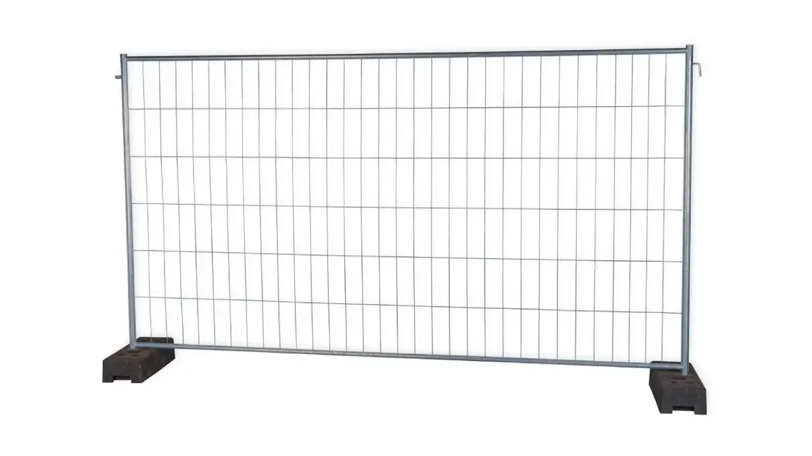

Bauzaun Profi 3,5 × 2,0 m
3,5 × 2,0 m · 14 kg
Technische Daten
| Querrohr | 28 x 1.1 mm |
|---|---|
| Standrohr | 40 x 1.1 mm |
| horizontaler Draht | 3 mm |
| vertikaler Draht | 3 mm |
| Maschenweite | 100 x 300 |
| Gewicht | 14 kg |
Beschreibung
10075 ist das Spitzenmodell der Bauzäune in 2000 mm Höhe und 3500 mm Länge. Die relativ leichte Konstruktion bietet eine hervorragende Mobilität, ohne dass die Stabilität und Robustheit darunter leidet.
Die Version 10075 verfügt über Haken-Ösen-Befestigungen und ist vollfeuerverzinkt.